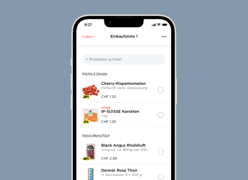
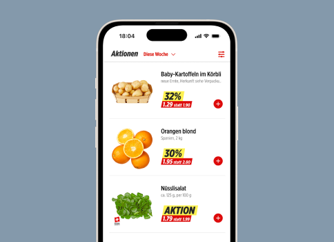
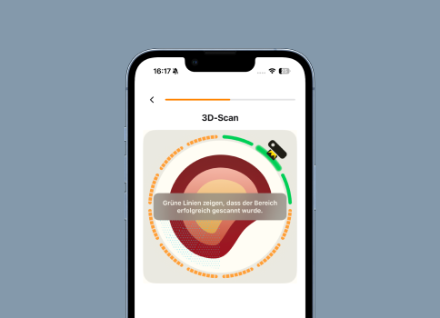
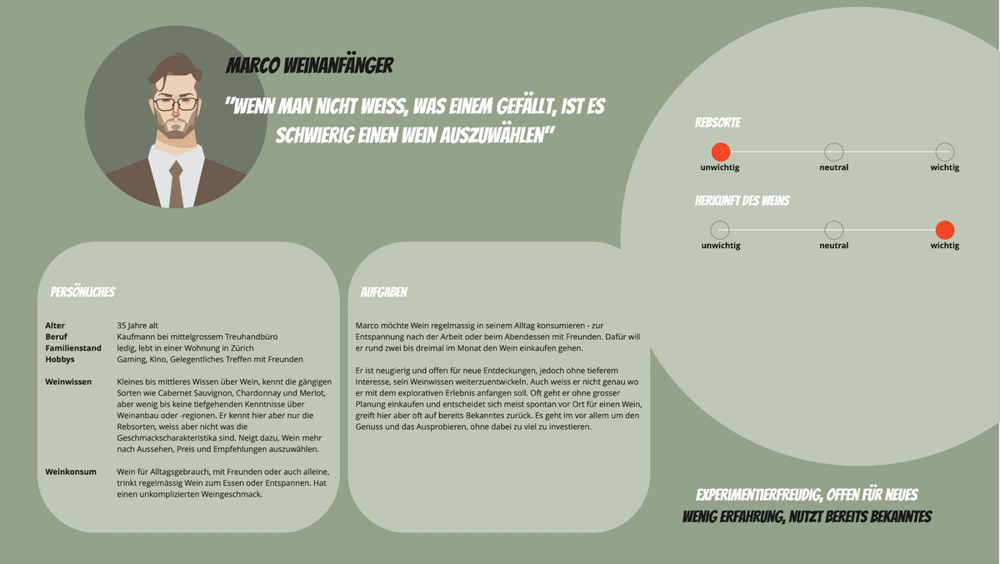

Denner app shopping list
Low engagement with the shopping list led to poor ratings and missed purchases. I identified and prioritized the problem and optimized the feature end to end:
- 28% increase in usage
- 90% CSAT score
Product owner with five years of experience, focused on UX research and UX design. Master's degree in Business Innovation (HSG) and a completed MAS in Human Computer Interaction Design (OST).
As a creative problem solver, I combine interdisciplinary thinking with strong analytical skills to drive the success of digital products. With genuine curiosity, I continuously identify new user needs and translate them into impactful product solutions.

Low engagement with the shopping list led to poor ratings and missed purchases. I identified and prioritized the problem and optimized the feature end to end:

Research and design work to improve perceived clarity and overview.

Concept, prototyping, and validation of new guidance for LiDAR-based 3D wound documentation.

Limited knowledge about wine customers in the Denner wine shop. I led a generative research study and developed personas and opportunity areas from the findings.